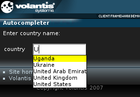

The Autocompleter widget provides a special type of the text input field in which you can select from a list of matching items while typing.
We will create a Autocompleter widget that returns the list of country names.

<xf:group>
<xf:input ref="f1">
<xf:label>country</xf:label>
<widget:autocomplete id="myAutocompleter" src="service/autocomplete"/>
</xf:input>
</xf:group>service/autocomplete?mcs-value=U
<response:response xmlns="http://www.w3.org/2002/06/xhtml2"
xmlns:response="http://www.volantis.com/xmlns/2006/05/widget/response"
xmlns:mcs="http://www.volantis.com/xmlns/2006/01/xdime/mcs">
<response:head>
<response:link rel="mcs:theme" href="/main.mthm"/>
</response:head>
<response:body>
<response:autocomplete>
<li>Uganda</li>
<li>Ukraine</li>
<li>United Arab Emirates</li>
<li>United Kingdom</li>
<li>United States</li>
</response:autocomplete>
</response:body>
</response:response>Below we provide a JSP example of an autocompletion service. The details of JSP are outside the scope of this tutorial, but you can see that the list of items is defined explicitly within the file. The code selects the items that match the mcs-value parameter.
To use provided JSP instead of the default service, you need to change the value of the src attribute to 'data.jsp', create a data.jsp file, and modify it by including the following code.
<?xml version="1.0" encoding="UTF-8"?>
<%@ page import="com.volantis.mcs.servlet.*" %>
<% response.setContentType("x-application/vnd.xdime+xml"); %>
<%
String paramValue = MarinerServletRequestContext.findInstance(request).getParameter("mcs-value");
boolean showAll = false;
if (paramValue == null) {
showAll = true;
paramValue = "";
}
String[] names = {"Afghanistan", "Aland Islands", "Albania", "American Samoa", "Andorra",
"Anguilla", "Antarctica", "Antigua And Barbuda", "Argentina", "Belgium"};
int counter = 1;
%>
<response:response xmlns="http://www.w3.org/2002/06/xhtml2"
xmlns:mcs="http://www.volantis.com/xmlns/2006/01/xdime/mcs"
xmlns:response="http://www.volantis.com/xmlns/2006/05/widget/response">
<response:head>
</response:head>
<response:body>
<response:autocomplete>
<%
for (int i=0; i<names.length; i++) {
if (showAll || names[i].startsWith(paramValue)) {
%>
<li><%=names[i]%></li>
<%
counter++;
}
}
%>
</response:autocomplete>
</response:body>
</response:response>
<?xml version="1.0" encoding="UTF-8"?>
<html xmlns="http://www.w3.org/2002/06/xhtml2"
xmlns:mcs="http://www.volantis.com/xmlns/2006/01/xdime/mcs"
xmlns:template="http://www.volantis.com/xmlns/marlin-template"
xmlns:widget="http://www.volantis.com/xmlns/2006/05/widget"
xmlns:si="http://www.volantis.com/xmlns/2006/01/xdime2/si"
xmlns:xf="http://www.w3.org/2002/xforms">
<head>
<title>Autocomplete Widget</title>
<link rel="mcs:theme" href="/themes/main.mthm"/>
<link rel="mcs:layout" href="/layouts/main.mlyt"/>
<xf:model>
<xf:instance>
<si:instance>
<si:item name="f1"/>
</si:instance>
</xf:instance>
</xf:model>
</head>
<body>
<template:apply href="templates/demo-main.xdtpl">
<template:binding name="title" value="Autocompleter"/>
<template:binding name="content">
<template:complexValue> Enter country name:
<div style="mcs-layout: 'layouts/2x2.mlyt'">
<xf:group>
<xf:input ref="f1" style="mcs-container: 'top-right'">
<xf:label style="mcs-container: 'top-left'">country</xf:label>
<widget:autocomplete id="myAutocompleter"
src="service/autocomplete" style="color: #000"/>
</xf:input>
</xf:group>
</div>
</template:complexValue>
</template:binding>
</template:apply>
</body>
</html>
| Name | Purpose |
|---|---|
| div | A section used to add extra structure to documents. Style sheets can be used to control the presentation. |
| response:autocomplete | Response element for a Autocompleter widget. Each li element contains a single matching item. |
| si:instance | Container for data items used to supply initial values for forms controls, or to provide additional data to be submitted with the form. |
| si:item | Defines an item of instance data that is required if a form control needs to be initialized, or when data not associated with a form control needs to be provided during form submission. |
| widget:autocomplete | Defines an Autocompleter widget. |
| xf:group | Combines a set of form controls into a user interface component. By applying theme properties on this element, you can control where form fragmentation occurs, and define or override at runtime the link texts specified on form fragment layouts. |
| xf:input | A form control for text input. |
| xf:instance | Optional element that contains instance data associated with the model element. It is used to supply initial values for forms controls, or to provide additional data to be submitted with the form. |
| xf:label | Provides a descriptive label for forms controls. |
| xf:model | Represents a form definition, used as a container for elements associated with its submission. |
| Core attributes | Attributes that are common to XDIME 2 elements. |
| Effects properties | Defines style properties used by the Framework Client. |